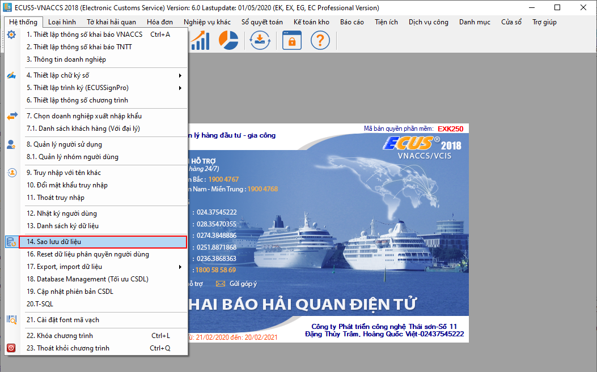
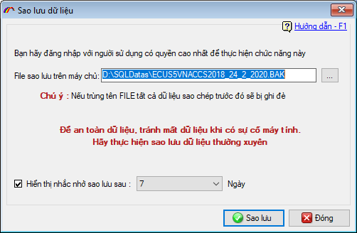
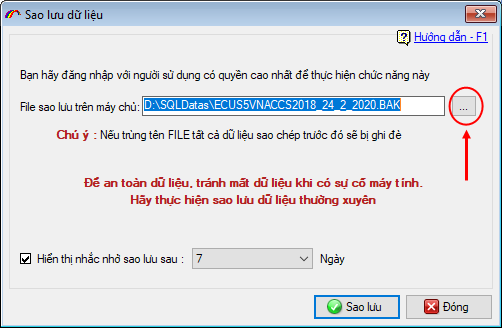
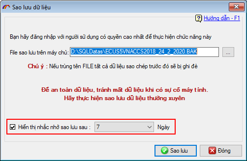
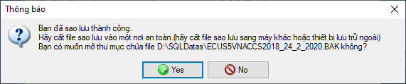
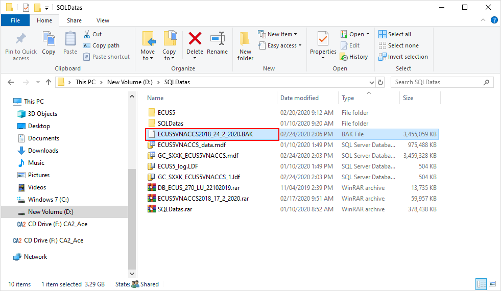

HƯỚNG DẪN SAO LƯU CƠ SỞ DỮ LIỆU
Tất cả dữ liệu khai báo đều được lưu vào trong Cơ sở dữ liệu trên máy chủ SQL của doanh nghiệp (chính xác hơn là lưu trên máy tính cài đặt hệ quản trị cơ sở dữ liệu SQL Server phục vụ chạy phần mềm ECUS5VNACCS, do doanh tự quản lý). Nhằm đảm bảo tránh bị mất dữ liệu khi gặp sự cố đột ngột, doanh nghiệp nên thực hiện sao lưu dữ liệu thường xuyên và lưu trữ ở những nơi an toàn khác. Các file sao lưu này sẽ được dùng để khôi phục lại dữ liệu phần mềm trong trường hợp có sự cố làm mất hoặc hỏng file dữ liệu đang chạy.
Để thực hiện sao lưu trên phần mềm, bạn vào menu Hệ thống chọn mục Sao lưu dữ liệu:

Chức năng thiết lập hiện ra như sau:

Tại đây bạn chọn đường dẫn nơi lưu trữ file sao lưu bằng cách nhấn nút có dấu (…)

Lưu ý:
- Bạn cần phải đăng nhập vào phần mềm bằng user có quyền cao nhất (thường là root hoặc user khác có quyền tương tự)
- Nếu bạn đang thực hiện tại máy trạm thì việc chọn đường dẫn nơi lưu file vẫn là đường dẫn trên máy chủ cài đặt hệ quản trị cơ sở dữ liệu, do đó khi thực hiện sao lưu xong bạn chỉ có thể thấy file đó trên máy chủ chứ không có trên máy tính trạm mà bạn đang thực hiện.
- File sao lưu sẽ được đặt mặc định có ngày/tháng/năm thực hiện sao lưu, nếu thường xuyên sao lưu, bạn chỉ cần giữ lại 2 file mới nhất, các file trước đó có thể xóa đi để giảm bớt dung lượng lưu trữ.
Cũng tại cửa sổ này, bạn có thể đặt lịch nhắc nhở sao lưu bằng cách đánh dấu tích chuột vào mục "Hiển thị nhắc nhở sao lưu sau" và chọn số ngày tương ứng.

Cuối cùng, bạn nhấn nút Sao lưu và chờ đến khi có thông báo thành công:

Nhấn Yes để mở thư mục nơi chứa file sao lưu vừa được tạo ra.

Chú ý:
- File sao lưu này bạn có thể copy và lưu trữ ở nơi an toàn khác.
- File sao lưu này sẽ chưa tất cả dữ liệu mà bạn khai báo cho đến thời điểm thực hiện sao lưu.
Bản quyền © thuộc về Công ty TNHH Phát triển công nghệ Thái Sơn